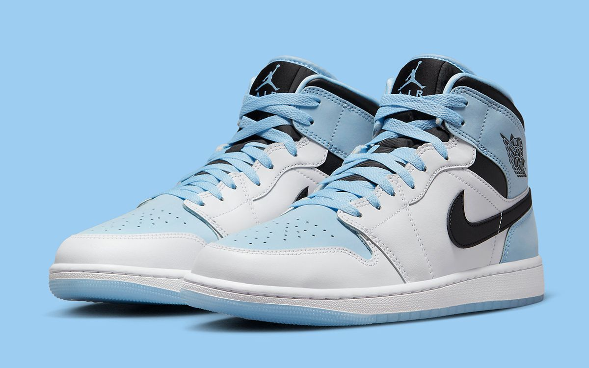
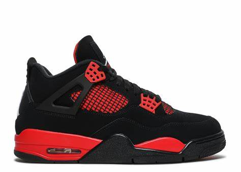

Nike and Jordan Brand are returning back to the Spider-Verse for their second Spider-Man themed Air Jordan 1, with the release of the Air Jordan 1 High OG Spider-Man Across the Spider-Verse.
Also known as the Next Chapter, the Jordan 1 High OG Spider-Man Across the Spider-Verse is the next iteration of the original Air Jordan 1 Chicago colorway. The limited edition sneakers are constructed using various leathers, suedes, and other premium materials across the uppers. The patterns used across the sneakers are designed to mimic the Miles Morales/Spider-Man animation style.

ICE BLUE
Introducing the Air Jordan 1 Mid GS 'Ice Blue', a sneaker that's more than just a shoe, it's a statement. This mid-top silhouette is an icy fresh take on the iconic Air Jordan 1, a design that has been turning heads since its inception in 1985. The 'Ice Blue' colorway is a refreshing blend of cool blues and crisp whites, reminiscent of a winter morning.

THUNDER
The Air Jordan 4 Retro ‘Red Thunder’, also known as 'Crimson', features familiar color blocking that recalls the coveted ‘Thunder’ colorway, originally released in 2006 and subsequently reissued in 2012. The mid-top sports a black nubuck upper with contrasting pops of crimson in lieu of the older shoe’s Tour Yellow accents. They appear on the sneaker’s molded eyelets, interior tongue, quarter panel, throat and midsole, which packs visible Air-sole cushioning under the heel. Jumpman branding decorates the tongue tag and heel.